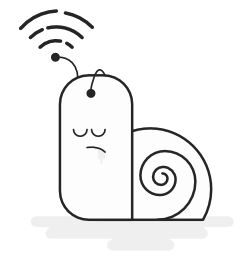

<!-- <div class="start-portal" [ngClass]="startPortal == true ? 'animated zoomOut':''">
  <button mat-raised-button (click)="hideStartPortal()">
    Start Tracking now
  </button>
</div> -->
<div class="connection" *ngIf="netWorkDetection == false">
  <div class="inner">
    
    <div>Please check your internet connection</div>
  </div>

</div>
<app-loader></app-loader>
<div [ngClass]="mode == 'true' ? 'unicorn-dark-theme':''">
  <div [ngClass]="mode == 'true' ? 'mat-app-background':''">
    <widget-toolbar [toolbarClass]="mode == 'true' ? 'toolbarDark':'toolbarLight'" (clicked)="getMode($event)">
    </widget-toolbar>
    <div class="content">
      <router-outlet></router-outlet>
    </div>
  </div>
</div>